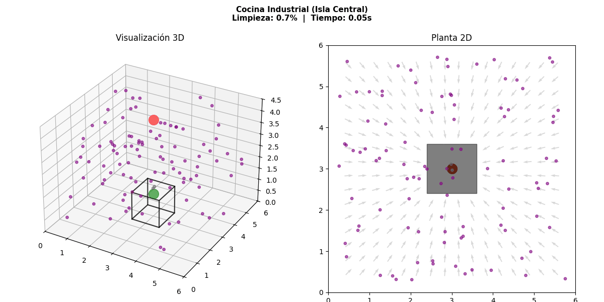

Análisis dinámico de partículas y optimización de flujos de ventilación

Vista interactiva de la dispersión de humo (gris), polvo (café) y la interacción aerodinámica con obstáculos físicos.
Vista interactiva de la dispersión de humo (gris), polvo (café) y la interacción aerodinámica con obstáculos físicos.
El simulador integra el Método de Euler y modelos estocásticos para calcular la eficiencia de remoción de partículas en un espacio controlado de 10x10x10 metros:
| Escenario de Prueba | Tiempo de Simulación | Tasa de Extracción | Eficiencia Final |
|---|---|---|---|
| Caso 1: Cuarto Vacío (Sin Muro) | 4.00 s | 112.5 part/s | 92.4% |
| Caso 2: Con Muro Deflector Central | 4.00 s | 68.2 part/s | 55.7% |
*Nota: Los datos demuestran cómo la geometría del espacio puede reducir drásticamente la tasa de captura del aire contaminado.
Todo el código fue desarrollado en Python utilizando librerías científicas estándar como NumPy para el cálculo de matrices vectoriales y Matplotlib para el renderizado tridimensional.
Script principal que contiene el motor de física, el algoritmo de colisiones y la animación.
Documentación complementaria de velocidades de captación industrial.
Muestra de la lógica implementada para el desvío aerodinámico y el cálculo de fuerzas de arrastre:
# --- SEGMENTO DEL CAMPO VECTORIAL Y ABSORCIÓN DE COLISIONES ---
def campoVectorialFuncion(x, y, z):
singularidad_evitar = 0.3
dx_vent, dy_vent, dz_vent = xS - x, yS - y, zS - z
dist_vent2 = dx_vent**2 + dy_vent**2 + dz_vent**2 + singularidad_evitar
magnitud_pull = fuerza_ext / dist_vent2
p = magnitud_pull * (dx_vent / np.sqrt(dist_vent2))
q = magnitud_pull * (dy_vent / np.sqrt(dist_vent2))
r = magnitud_pull * (dz_vent / np.sqrt(dist_vent2))
# Restricción por hitboxes de obstáculos
for (xMin, xMax, yMin, yMax, zMin, zMax) in obstaculos:
cx = np.clip(x, xMin, xMax)
cy = np.clip(y, yMin, yMax)
cz = np.clip(z, zMin, zMax)
# (Lógica de rebote y amortiguamiento continuo...)